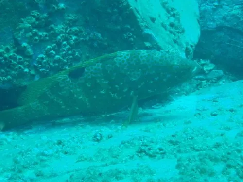

鱼类 · 动物界
赤点石斑鱼 Epinephelus akaara

体侧布满橙红色斑点的小型石斑鱼，肉质细嫩、价格高昂，是中国东南沿海名贵海产，因过度捕捞被列为濒危。
- 分类
- 门脊索动物门纲辐鳍鱼纲目鲈形目科鮨科属石斑鱼属
- 栖息环境
- 近岸岩礁、珊瑚礁和藻类丛生的水域
- 地理分布
- 西北太平洋，包括中国东南沿海、台湾、日本南部和朝鲜半岛
- 保护级别
- IUCN 濒危（EN）；中国未列入国家重点保护野生动物名录
物种志
赤点石斑鱼体呈椭圆形，头大，口大，体色棕褐或灰褐，体侧和头部散布着许多橙红色小斑点，背鳍和尾鳍边缘常呈红色。成鱼体长一般 30–40 cm，最大可达 60 cm。
赤点石斑鱼分布于西北太平洋，包括中国东南沿海、台湾、日本南部和朝鲜半岛。它栖息在岩礁、珊瑚礁和藻类丛生的近岸水域，多单独活动，捕食小鱼、虾蟹和头足类。赤点石斑鱼是雌雄同体、先雌后雄的鱼类，繁殖期在夏季。由于肉质细嫩、价格高昂，它长期遭到过度捕捞，加上沿海栖息地退化，野生种群明显下降，IUCN 将其列为濒危。中国已开展人工育苗和增殖放流。它也是石斑鱼杂交育种中常用的亲本之一。
形态与习性
- 食性小鱼、虾蟹和头足类
- 体长一般 30–40 cm，最大可达 60 cm
- 体色棕褐或灰褐，体侧布满橙红色小斑点
- 繁殖雌雄同体、先雌后雄，夏季繁殖
- 经济价值肉质细嫩，是东南沿海名贵海产
- 保护过度捕捞和栖息地退化导致野生种群下降
趣味知识
- 赤点石斑鱼身上的橙红色斑点像撒开的赤色墨点，因此得名。
- 它是雌雄同体、先雌后雄的鱼类，成年后部分个体会转变为雄鱼。
- 赤点石斑鱼价格高昂，是东南沿海宴席上的名贵海鱼。